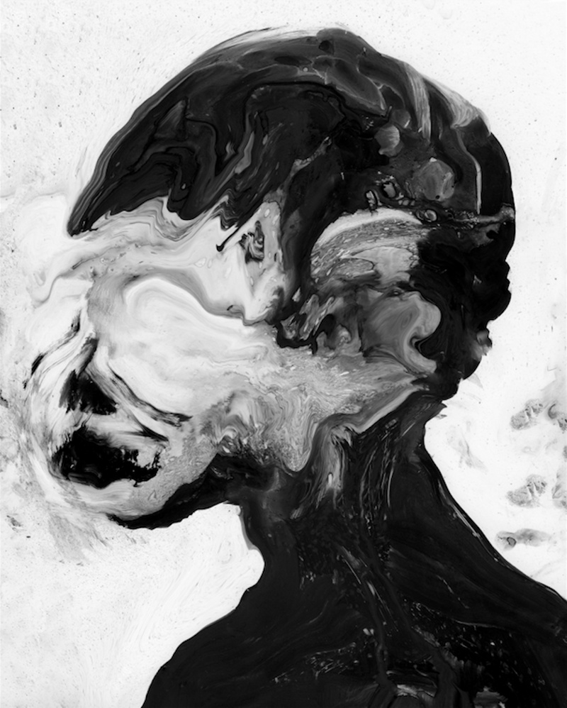
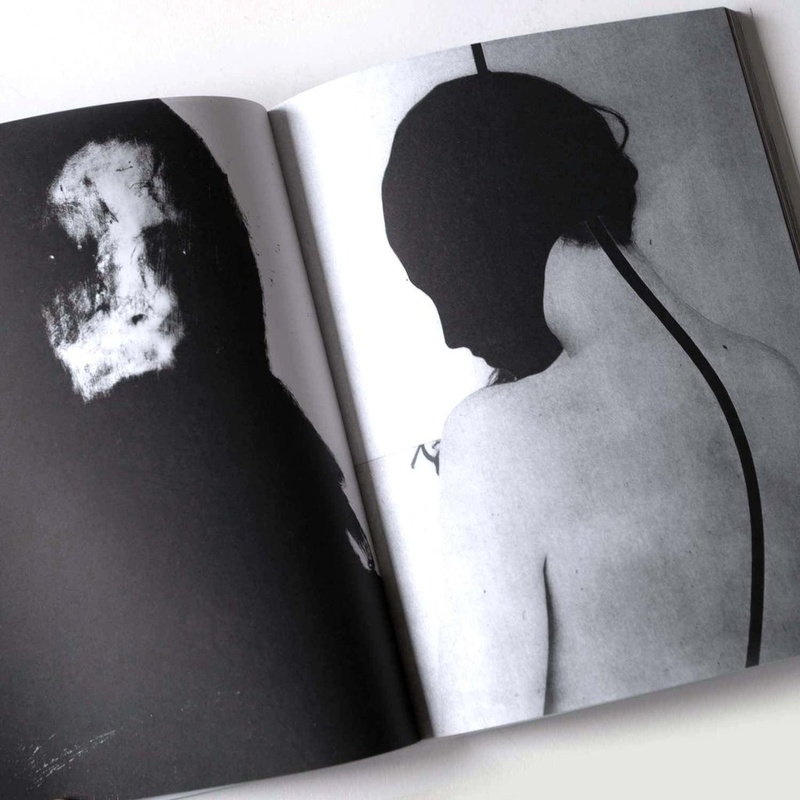
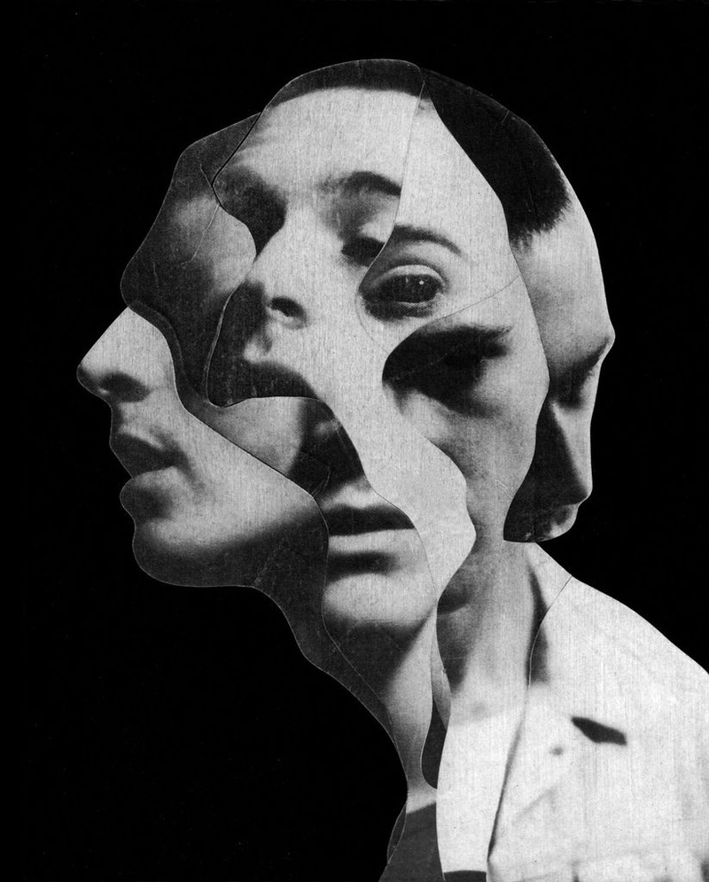
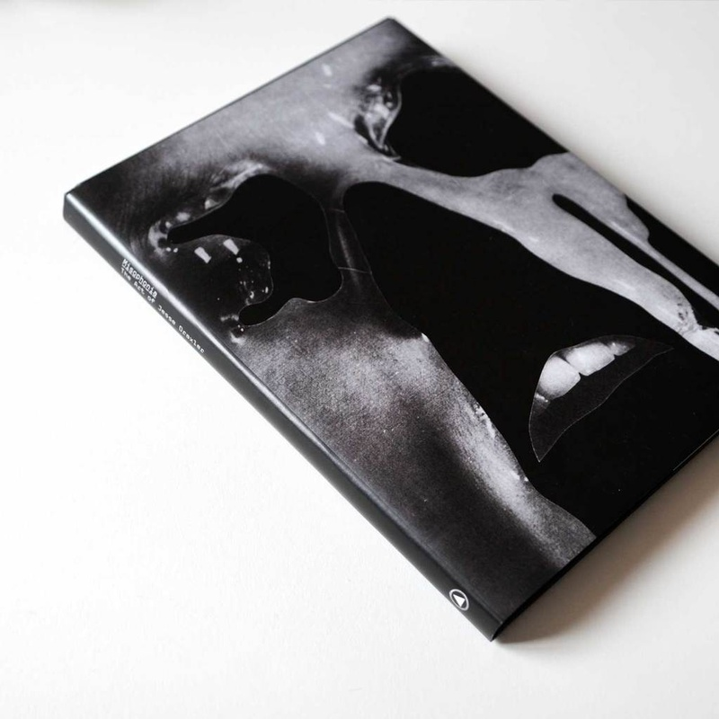

Jesse Draxler
Visual artist, Designer
Artist Jesse Draxler has been exhibiting his black-scale canvases and collages nationally and internationally since 2012. He is privately collected around the world and his most recent solo exhibition "Tire Fire" took place in September 2017 at Booth Gallery in New York. As an illustrator his client list includes The New York Times, McQ Alexander McQueen,The Atlantic, and The New Yorker, among others. He is also an active member of his music community, and has created work for musicians like Zola Jesus, Chelsea Wolfe, and Nine Inch Nails, and designed an album cover for Prince. A book of his collected work, Misophonia, was published in 2018 by Sacred Bones.
Are you a person who's able to work pretty much wherever you are, or do you have a habitual and structured studio practice?
I have a studio in LA, but I wouldn't say that I actually live here. I like not putting down roots and just being able to flow with any situation, or at the drop of a dime be able to leave wherever I am. I like that idea. I'm not a big traveler or anything of that nature, and I wouldn't consider myself nomadic by any means, but I do like the idea of being able to leave at any time. Still, I definitely consider myself a creature of comfort to some degree. I need to feel settled and comfortable to be able to work. I need to be comfortable in a space and I need to have some privacy, somewhere I can spread out and think a little bit. So I guess I'm a bit of both. I've traveled and worked in studios all over the place, but it has to be a controlled environment for me to be able to settle down and really get into my flow.

While so many art books can feel like a grab bag of sorts-"Here's a little bit of everything I've done up until this point"-your book Misophonia feels like one giant, cohesive, perfectly designed statement of intent. We talk to a lot of artists about finding their voice. Do you remember when that happened for you? When your point of view really came into focus?
Cohesiveness is definitely something important to me. I am always striving for a certain cohesiveness, no matter what I'm working on or what medium I'm working with. And I do remember when it kinda came into focus. I was doing a lot of exploring throughout my 20s, where I didn't care what I was making. I just wanted to try a bunch of shit it and be truly experimental. Somewhere around my early 30s it finally started coming into focus. That's when I started working primarily in black and white. I wouldn't say that I have any way to explain what it is-what my exact sensibility is or anything-but it definitely has a specific feeling to it and I know when I hit on it. It's a hard thing to try and put into words, other than it being a feeling you have when something is working, when you're making the right kind of thing. You just feel it. It's kind of like one of those metal detectors people use when looking for things in the sand. You don't know exactly what you're looking for, but it starts to beep when you hit it. That's how I go about finding or defining my aesthetic. It's something that I do keep in mind, but I don't try to let myself be limited by it. I'm not trying to create a stylistic cage that I'm gonna have to live inside of forever. In terms of my aesthetic, I definitely want everything to resonate on the same frequency. If it's made by me I want people to know it. Obviously that's important to me-having a singular vision and a singular voice that's unmistakable. That has always seemed more important to me than a lot of other things that people seem to concentrate on. Having a point of view became more important to me than craft. Having something to say is more important than being able to say it well, or being able to say nothing well. I'd rather have something to say and not be able to say it perfectly, than have nothing to say but be able to be really eloquent about it. I forget the exact quote, but there was a famous statement that really resonated with me, something like, "Beautiful craft cannot rescue banal ideas."
I think a lot of people in different creative endeavors feel that way. I have a lot of musician friends who I know feel that way, where it's like they've created something so strong that it becomes their own cage. They build this cage around themselves. It's something that I'm thinking about quite a bit these days, about still being true to myself, but also being able to mix it up. I've definitely been having a compulsion to do something completely different, or do things differently. Something that I wrote in my journal the other day was about this compulsion I have right now to contradict myself, to try totally different things. I like the idea of there being an infinity inside of a limitation. That's definitely how I see things. A strict limitation can free you a lot of the time, because when you limit yourself, you're freeing yourself of everything outside of that limitation. You take all these other options off the table and you don't have to worry about that shit anymore. I find the limitations comforting. I enjoy having strict perimeters to work within, because staring at a true infinity of unlimited options is so daunting. You can actually be stunted by having too many options, so sometimes it's best to be given a limit to the number of options to choose from. If you're a really creative person and have a good imagination, there's an infinity inside of every limitation.

In addition to your personal work, you've worked as an illustrator and designer for a lot of different freelance clients. Do you find that doing commission work strikes an interesting balance against your personal work?
I like having client work. Not all the time, obviously, and every client is different-some are really awful, some are great-but for the most part, as an overall generalized statement about doing client work versus personal work, I like to play them off of each other. I feel fortunate that I've been able to have clients come to me who just want what I do anyway. They are coming to me because of my existing aesthetic, so a lot of the time it doesn't actually feel like a client gig, aside from the reality of deadlines and approvals and shit. In a general sense, I feel like I can fit all of the client work that I do into a generalized timeline of my work. It's hard for me to separate sometimes what's client work and what's personal work, because I can work out concepts that I want to try to play with, or experiment with things that I wanted to experiment with, while doing the client work. It all just kind of gets played against and into one another. I like to have both commercial work and personal work going at the same time, honestly. When I look back through my work chronologically, I can see the client work and the personal work. If I put them together, it's like, "Oh yeah, I was working on these things at the same time." It's very obvious. You can definitely see it. Client work is another version of working within certain limitations-it's just that someone else is providing them for you.
You grew up in rural Wisconsin in a family of mechanics. Did you have artistic ambitions from a young age? How did you know that this kind of career was something available to you? What was your entry point into this world?
I always felt something. I don't want to say I always felt like I was going to be an artist, or something as grandiose as that, because "artist" still seems like such a pompous term to me. So I never thought of myself as an artist, but I definitely felt like an outcast, which, for me, almost feel like the same thing. An artist and an outcast sometimes seem the same. I always felt like an outcast, and I think that was kind of the entrance into the realm of art that I find myself working in now. I've always been someone who liked to make things, whether it be drawing or making other things with my hands. I was always interested in creating things. I never had any sort of formal introduction to art in my youth because, being from Wisconsin, I grew up smack dab in the middle of the state. Our neighbors were all farmers and I grew up in a little neighborhood in the middle of nowhere. I lived in the woods and then beyond the woods were soybean fields and little else. It was kind of like an island in the middle of nowhere. My parents weren't too interested in the idea of culture outside of the immediate culture of our surroundings. I didn't have any idea of what an artist was, or what fine art even was, honestly. There weren't any museums around us to visit. But, as I said, I always liked to make things, and I always felt like an outcast. Those are the two things that collided and became what my discipline is now.
Do you have any advice for young artists who are looking to make a name for themselves?
You know, I get asked for advice a lot, but I don't like to give advice. I'm not an advice giver, because I'm not really an advice taker. It's hard to give advice when, for the most part, you don't really listen to other people's advice. I will say that what worked for me was just keeping my head down, and barreling forward. Just kind of letting nothing get in your way. Also, I simplified my life to a point where I could give all of my attention, all of my drive and focus, everything that I had, towards making my work. I really wouldn't know what else to tell anybody, or how to skip any of the steps involved with that. You gotta keep doing it and you've gotta want it. You have to keep going. No matter what you're doing, I think it's really as simple as that.